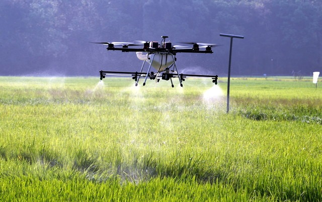

“Teknologi Perbenihan di Bidang Pertanian”

Teknologi perbenihan di pertanian saat ini semakin berkembang untuk meningkatkan produktivitas, ketahanan terhadap hama dan penyakit, serta adaptasi terhadap perubahan iklim. Berikut beberapa teknologi perbenihan modern yang digunakan:
1. Benih Hibrida
Benih hasil persilangan antara dua varietas unggul untuk menghasilkan tanaman dengan hasil lebih tinggi, lebih tahan penyakit, dan lebih cepat panen. Contoh: padi hibrida, jagung hibrida.
2. Benih Transgenik (GMO)
Benih yang dimodifikasi secara genetik untuk memiliki sifat tertentu, seperti ketahanan terhadap hama (contoh: jagung Bt) atau toleransi terhadap herbisida (contoh: kedelai RR).
3. Teknik Kultur Jaringan
Metode perbanyakan tanaman dalam kondisi steril di laboratorium untuk menghasilkan bibit yang seragam, bebas penyakit, dan dalam jumlah besar dalam waktu singkat. Contohnya pada pisang, anggrek, dan kentang.
4. Seed Coating & Seed Treatment
Seed Coating: Benih dilapisi dengan nutrisi, pestisida, atau mikroba bermanfaat untuk meningkatkan daya tumbuh dan ketahanan terhadap penyakit.
Seed Treatment: Benih direndam atau diberi perlakuan khusus, seperti fungisida atau biofertilizer, untuk meningkatkan daya kecambah dan pertumbuhan awal.
5. Teknologi CRISPR dan Penyuntingan Gen
Teknologi terbaru yang memungkinkan penyuntingan DNA tanaman untuk meningkatkan kualitas dan ketahanan terhadap kondisi lingkungan ekstrem tanpa perlu memasukkan gen dari spesies lain.
6. Smart Seed Sensor & IoT
Sensor dan teknologi berbasis IoT digunakan untuk memonitor kondisi benih, kelembaban tanah, suhu, dan faktor lain untuk menentukan waktu dan cara penanaman terbaik.
Teknologi ini membantu petani meningkatkan hasil panen, mengurangi ketergantungan pada pestisida dan pupuk sintetis, serta mendukung pertanian berkelanjutan
[ Kembali ]